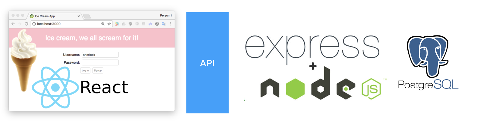
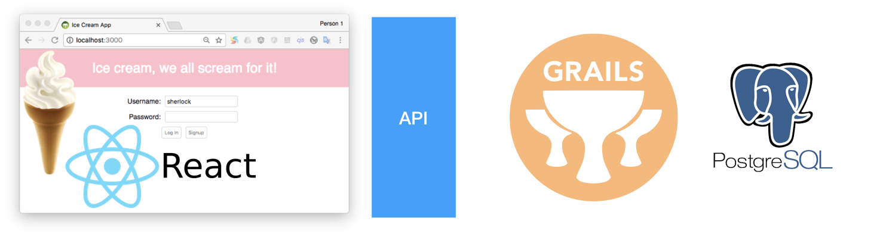

Replacing a Node/Express API with Grails
Learn how to replace a RESTful API in Node/Express with Grails
Authors: Zachary Klein, Sergio del Amo
Grails Version: 4
1 Grails Training
2 Introduction
We are going to use the React + Node.js application described by Mark Volkmann in the SETT article Web App Step by Step, April 2017 issue of SETT. The article laid out a detailed blueprint for developing a modern web application from beginning to end. The sample project in this article featured a React frontend and a Node/express.jsbackend, backed by PostgresSQL database. The project included several advanced features, including WebSockets and HTTPS.
In this guide, we will demonstrate how to develop the same web app, using the Grails framework. The only explicit technology change we will be making will be the use of Grails over Node/express.js for the backend - otherwise we will use the same stack, including React and PostgresSQL. However, we will see how Grails simplifies and accelerates the development process and makes developers more productive without giving up finer grain control where needed.
The emphasis of this guide will not be so much learning how the “innards” of how web applications work, but rather on developer productivity. In addition, we will refer readers to the original SETT article for details on the implementation of the React application, as there we will be using almost the exact same code (any changes will be highlighted and explained).
This guide shows how to transition an application from a technology stack such as:

to:

3 Requirements
3.1 Following Along
4 Writing the Application
The completed sample project for this article can be found at:
4.1 React Profile
Every Grails project begins with a single create-app command. For the
purposes of following along with this guide, you may choose to install
Grails via the official website, or using sdkman (recommended).
However, there is no need to install the framework on your machine to
create your Grails app - instead, let’s browse to
http://start.grails.org and create our application using the Grails
Application Forge.
Choose the latest version of Grails (4 as of the time of writing)
and select the react profile.
| With the use of application profiles, Grails allows you to build modern web applications. There are profiles to facilitate the construction of REST APIs or Web applications with a Javascript front-end |
Start both client and server applications
Once you’ve downloaded your application, expand it into a directory of
your choice, cd into the project, and run the following two commands
(in two separate terminal sessions):
~ ./gradlew server:bootRun //Windows users use "gradlew.bat"
//in a second terminal session
~ ./gradlew client:bootRunThe gradlew command launches the Gradle "wrapper”, which is provided
by the Gradle build tool that is used in all Grails projects since Grails 3.0.
The wrapper is a special script that actually download and install the Gradle
build tool (if necessary) before running your commands. Gradle will then
download all needed dependencies (including Grails) and install them in your project (caching them for future
use as well). This is why you don’t need to install Grails on your
machine: if your project includes the Gradle wrapper, it will handle
that for you.
You can think of Gradle roughly as an alternative to npm (which "does
not" stand for Node Package Manager). It doesn’t
provide the CLI that npm offers but it fulfills a similar purpose in dependency
management and build-processing. When a Gradle command (or "task") is run,
Gradle will first download all dependencies listed in the project’s build.gradle
file, similar to running npm install.
|
What about the server and client portion of those two commands?
Because we’re using the react profile, Grails has actually created two
separate “apps” for us - the backend Grails application, and the React
application (which in turn is generated via create-react-app). Gradle
treats these two apps as independent subprojects, with the above names.
This is called a
multi-project
build.
When running a Gradle “task” from the project root directory, anything
after ./gradlew [project_name]: will match a task specific to that
subproject. The bootRun task is configured in both projects to start
the respective app.
Where does bootRun come from? This Gradle task is inherited from the Spring Boot framework, upon which Grails is based. Of course
create-react-app projects don’t have such a task by default. The React profile provides the client:bootRun task as a wrapper around the npm/yarn start script.
This allows you to use advanced Gradle features like running both server and client in
parallel mode with one command. For developers, running ../gradlew client:bootRun is the same
as running npm start (or yarn start) in a stock create-react-app
project, and in fact you can run the client app exactly that way if
you have npm/yarn installed on your machine.
|
Once the gradlew commands have completed downloading dependencies and
launching their respective apps, you should be able to browse to
http://localhost:8080 to see the Grails backend application, and
http://localhost:3000 to view the React app.
Before we continue implementing our application, take a moment to explore the app we have right now. The Grails application by default is providing some useful metadata in JSON format, and the React app is consuming that data via a REST call and displaying it via the app’s navigation menus. This isn’t a very useful app, but you can see a lot of boilerplate has already been set up for you.
4.2 Datasource
Now that we have our basic application structure, its’s time to set up our database. We are trying to migrate a React + Node/express application which used PostgreSQL. However, it’s worth noting that Grails has already set up a basic datasource for us, in the form on an in-memory H2 database. This database is destroyed and recreated every time the app is run, and it will even be updated during runtime if new tables/columns are added to the domain classes (more on those later). For many apps, this default database will be very well suited for the initial stages of app development, especially if you’re making many iterative changes to your data model. However, in keeping with the app being migrated, we are going to replace this default H2 datasource with our desired PostgreSQL database.
Let’s recap the steps to install PostgresSQL on your machine:
To install PostgreSQL in Windows, see https://www.postgresql.org/download/windows/.
To install PostgreSQL in macOS:
Install Homebrew by following the instructions at http://brew.sh/. Enter the following: brew install postgresql To start the database server, enter
pg_ctl -D /usr/local/var/postgres start.To stop the database server later, enter
pg_ctl -D /usr/local/var/postgres stop -m fast.
Step by Step -- Mark Volkmann
Once you’ve installed Postgres (or if you already have it installed),
create a new database for our app using createdb
~ createdb ice_cream_db_2If you recall in the previous article (where the above installation steps were taken from), the next steps here would be to create the database tables needed for our app. However, we won’t be using any SQL in this project. That’s because Grails offers a powerful and developer-friendly alternative: the GORM; a data access toolkit for the JVM.
4.3 GORM
GORM works with any JDBC-compatible database, which includes Postgres (as well as over 200 other databases). To begin using Postgres with our new Grails app, we have 2 steps to complete:
- Step #1
-
Install the JDBC driver in our
serverproject. Editserver/build.gradle, and find the section nameddependencies. Add the following line of code:runtime 'org.postgresql:postgresql:9.4.1212'This will tell Gradle to download version 9.4.1212 of theorg.postgresql.postgresqllibrary from the Maven Central repository, and install it in our app.
link:../snippets/server/build.gradle[role=include]
You can think of build.gradle as filling a similar purpose to a package.json file in a Node.js project. It specifies repositories, dependencies, and custom tasks (similar to npm scripts) for your project.
|
- Step #2
-
Configure GORM to use our PostgreSQL database instead of the default H2 database. Edit
server/grails-app/conf/application.yml, scroll down to the section starting withdatasource, and replace it with the following content:
link:../snippets/server/grails-app/conf/application.yml[role=include]Now our Grails app is connected to our database, but we haven’t created any tables yet. With Grails, there’s no need to create the database schema manually (although you certainly can do so if you want). Instead, we’ll specify our domain model in code, by writing Domain Classes.
By convention, Grails will load any Groovy classes located under
grails-app/domain as Domain Classes. This means that GORM will map
these classes to tables in the database, and map the properties of these
classes to columns in the respective tables. Optionally, GORM will
create these tables for us, which we have already enabled in our
application.yml file with the dbCreate: update setting.
This means it’s actually quite trivial to set up the database schema from the original article.
The React + Node/express used the next database schema:
create table ice_creams (
id serial primary key,
flavor text
);
create table users (
username text primary key,
password text -- encrypted length
);
create table user_ice_creams (
username text references users(username),
ice_cream_id integer references ice_creams(id)
);GORM is the data access toolkit used by Grails by default. We can customize how the generated database schema looks like.
Domain classes in Grails by default dictate the way they are mapped to the database using sensible defaults. You can customize these with the ORM Mapping DSL.
For each of the tables we need in our
app, we will create a domain class under the grails-app/domain
directory.
Run the following commands:
~ ./grailsw create-domain-class demo.IceCream
~ ./grailsw create-domain-class demo.User
~ ./grailsw create-domain-class demo.UserIceCreamThese commands will generate three Groovy classes, under
grails-app/domain/demo. Edit these files with the following
content to generate an identical database schema as in the previous app:
package demo
class User implements Serializable {
String username
String password
static mapping = {
table 'users'
password type: 'text'
id name: 'username', generator: 'assigned'
version false
}
}
You may have noticed we have not encrypted our password column
- don’t worry, we’ll get to that later on.
|
package demo
class IceCream implements Serializable {
String flavor
static mapping = {
table 'ice_creams'
flavor type: 'text'
version false
}
}package demo
class UserIceCream implements Serializable {
User user
IceCream iceCream
static mapping = {
table 'user_ice_creams'
id composite: ['user', 'iceCream']
user column: 'username'
iceCream column: 'ice_cream_id'
version false
}
}The previous domain class represents a join table for our User and IceCream
classes.
Package Naming
As is common in Java projects, we have created a “package” for our
domain classes. Packages help distinguish our classes from classes from
libraries or plugins that we might use later. The package is reflected
in the directory structure as well: these two files will be created
under grails-app/domain/demo/.
| Why are we using period instead of dash separators, as was shown in the previous article? In Java it is generally considered against convention to use dashes (hyphen) in package names. See this link for details on the Java naming conventions. |
4.4 Grails Console
If you were to start up your app now, Grails will connect to the Postgres database, create the tables and columns needed to persist your domain objects. Of course, there would be no data in the database initially. We will solve that issue shortly, but for now, we can run a Grails command that will give as an interactive console where we can create, update, delete and query our domain objects.
Run the following command:
~ ./grailsw console(If you have Grails installed locally on your machine, you can run the
grails command directly, e.g.: grails console. However, Grails
projects include the grailsw "wrapper" command which will install the
correct version of Grails for you.)
Now you should see the Grails Console. You can import any classes from your project (both your own code as well as any dependencies) and run any Groovy code you’d like.
The following code will show how to accomplish the database operations from the previous "Web App" article, using GORM and the Groovy language:
import demo.*
// Delete all rows from these tables:
// user and ice_cream via HQL updates (efficient for batch operations)
IceCream.executeUpdate("delete from IceCream")
User.executeUpdate("delete from User")
// Insert three new rows corresponding to three flavors.
def iceCreams = ['vanilla', 'chocolate', 'strawberry'].collect { flavor ->
new IceCream(flavor: flavor).save(flush: true)
}
// Get an array of the ids of the new rows.
def ids = iceCreams*.id
println "Inserted records with ids ${ids.join(',')}"
// Delete the first row (vanilla)
def vanilla = IceCream.get(ids[0])
vanilla.delete()
// Change the flavor of the second row (chocolate) to "chocolate chip".
def chocolate = IceCream.findByFlavor('chocolate')
chocolate.flavor = 'chocolate chip'
chocolate.save(flush: true)
// Get all the rows in the table.
iceCreams = IceCream.list()
// Output their ids and flavors.
iceCreams.each { iceCream ->
println "${iceCream.id}: ${iceCream.flavor}"
}Enter the above code into the Grails Console (launched with the previous
command), and click the "Run" button to execute the script. If you like,
you can save the script to be reused later (note that this Groovy script
will only work in the Grails Console, not via the "plain" Groovy Console
or Groovy compiler (groovyc) - this is because our domain classes need
to be loaded by Grails in order for this code to work).
You might think this method could be used to populate our database with
some initial data, and you’d be correct - any inserts/updates we make in
the Console are persisted to the database we configured in our
application.yml file. However, Grails provides a BootStrap.groovy
file which is much better suited to this task as you will see in the next section.
4.5 Seed Data
Edit the file server/grails-app/init/demo/BootStrap.groovy and add the
following code:
link:../snippets/server/grails-app/init/demo/BootStrap.groovy[role=include]As you can see, we use several Grails Services (more about services in the next section) as collaborators. Grails encourages to keep all your business logic in the service layer.
link:../snippets/server/grails-app/services/demo/IceCreamService.groovy[role=include]
link:../snippets/server/grails-app/services/demo/IceCreamService.groovy[role=include]
link:../snippets/server/grails-app/services/demo/IceCreamService.groovy[role=include]
link:../snippets/server/grails-app/services/demo/IceCreamService.groovy[role=include]
link:../snippets/server/grails-app/services/demo/IceCreamService.groovy[role=include]link:../snippets/server/grails-app/services/demo/RoleService.groovy[role=include]
link:../snippets/server/grails-app/services/demo/RoleService.groovy[role=include]
link:../snippets/server/grails-app/services/demo/RoleService.groovy[role=include]
link:../snippets/server/grails-app/services/demo/RoleService.groovy[role=include]
link:../snippets/server/grails-app/services/demo/RoleService.groovy[role=include]link:../snippets/server/grails-app/services/demo/UserService.groovy[role=include]
link:../snippets/server/grails-app/services/demo/UserService.groovy[role=include]
link:../snippets/server/grails-app/services/demo/UserService.groovy[role=include]
link:../snippets/server/grails-app/services/demo/UserService.groovy[role=include]link:../snippets/server/grails-app/services/demo/UserRoleService.groovy[role=include]
link:../snippets/server/grails-app/services/demo/UserRoleService.groovy[role=include]
link:../snippets/server/grails-app/services/demo/UserRoleService.groovy[role=include]
link:../snippets/server/grails-app/services/demo/UserRoleService.groovy[role=include]4.6 Authentication
Because Grails is based upon Spring Boot, it is compatible with many other projects in the Spring Ecosystem. One of the most popular such projects is Spring Security. It provides powerful authentication and access control for Java web apps, and supports many authentication methods, from LDAP to OAuth2. Even better, there is a set of Grails plugins that make Spring Security a breeze to set up.
Edit server/build.gradle again, and add the following two lines:
server/build.gradle
link:../snippets/server/build.gradle[role=include]We have placed the Spring Security Core and REST plugins configuration in application.yml
link:../snippets/server/grails-app/conf/application.yml[role=include]Please consult the Spring Security docs and the Grails Spring Security plugin docs for more information.
We have modified slightly the User domain class. Moreover, we added two other domain classes to map roles and the relationship
between roles and users.
link:../snippets/server/grails-app/domain/demo/User.groovy[role=include]| 1 | We’ll use this property to keep track of expired sessions |
link:../snippets/server/grails-app/domain/demo/Role.groovy[role=include]link:../snippets/server/grails-app/domain/demo/UserRole.groovy[role=include]We have added a “listener” which will encrypt our password field whenever a new User is created.
link:../snippets/server/src/main/groovy/demo/UserPasswordEncoderListener.groovy[role=include]We register this listener as a Bean in resources.groovy
import demo.UserPasswordEncoderListener
// Place your Spring DSL code here
beans = {
userPasswordEncoderListener(UserPasswordEncoderListener)
}4.7 REST Services
Now that we have our database configured and populated, it’s time to set up our service layer. Before we do this, it’s important to understand the two main data-handling "artifacts" provided by the Grails framework.
-
Controllers: Grails is a MVC framework, where "C" stands for Controller. In an MVC app, controllers define the logic of the web application, and manage the communication between the model and the view. Controllers respond to requests, interact with data from the model, and then respond with either a view (HTML page) or some other consumable format (such as JSON). Controllers are Groovy classes located in
grails-app/controllers -
Services: Many times we need to do more with our data than simply take a request and return a response. Real-world apps typically include a substantial amount of code dedicated to "business logic". Grails supports "services" which are classes that have full access to the model, but are not tied to a request. Controllers, as well as other parts of your app, can call services (which are made available via Spring’s dependency injection) to get back the data they need to respond to their requests. Services are Groovy classes located in
grails-app/servicesand can be injected by name into other Grails artifacts.
To implement our RESTful API in our app, we’ll use controllers to respond to API requests (POST, GET, PUT, DELETE), and services to handle our "business logic" (which is pretty simple in our case). Let’s start with a controller:
The React app consumes several endpoints.
4.8 Signup Endpoint
Signup
To signup into the application the React app sends a POST request to the /signup endpoint. It includes a JSON Payload containing username and password. We are going to map this with Grails.
First, we register the endpoint in URLMappings by adding the next line into the mappings:
link:../snippets/server/grails-app/controllers/demo/UrlMappings.groovy[role=include]Next we create an controller which binds the JSON payload with the help of a command object.
link:../snippets/server/grails-app/controllers/demo/SignupCommand.groovy[role=include]link:../snippets/server/grails-app/controllers/demo/SignupController.groovy[role=include]| 1 | The @Secured annotation specifies the access controls for this controller - anonymous access is permitted |
| 2 | Check for duplicate usernames |
| 3 | Authenticate the newly created user, and generate the authentication token. This step saves the React app from having to make a second login request after the /signup request |
The controller uses several services as collaborators:
link:../snippets/server/grails-app/services/demo/RoleService.groovy[role=include]
link:../snippets/server/grails-app/services/demo/RoleService.groovy[role=include]
link:../snippets/server/grails-app/services/demo/RoleService.groovy[role=include]
link:../snippets/server/grails-app/services/demo/RoleService.groovy[role=include]
}link:../snippets/server/grails-app/services/demo/UserService.groovy[role=include]
link:../snippets/server/grails-app/services/demo/UserService.groovy[role=include]
link:../snippets/server/grails-app/services/demo/UserService.groovy[role=include]
link:../snippets/server/grails-app/services/demo/UserService.groovy[role=include]
link:../snippets/server/grails-app/services/demo/UserService.groovy[role=include]
link:../snippets/server/grails-app/services/demo/UserService.groovy[role=include]
}link:../snippets/server/grails-app/services/demo/UserRoleService.groovy[role=include]
link:../snippets/server/grails-app/services/demo/UserRoleService.groovy[role=include]
link:../snippets/server/grails-app/services/demo/UserRoleService.groovy[role=include]
link:../snippets/server/grails-app/services/demo/UserRoleService.groovy[role=include]
}4.9 Flavors by User Endpoint
When the logs into the application or inmediately after signup, app he is presented with a list of his favourite flavors.
To fetch those flavors, the React app sends a GET request to the /ice-cream/$username endpoint. We are going to map this with Grails.
First, we register the endpoint in URLMappings by adding the next line into the mappings:
link:../snippets/server/grails-app/controllers/demo/UrlMappings.groovy[role=include]Next, we create a controller action which fetches a list of flavors for the logged username
link:../snippets/server/grails-app/controllers/demo/IceCreamController.groovy[role=include]
link:../snippets/server/grails-app/controllers/demo/IceCreamController.groovy[role=include]
link:../snippets/server/grails-app/controllers/demo/IceCreamController.groovy[role=include]
link:../snippets/server/grails-app/controllers/demo/IceCreamController.groovy[role=include]
link:../snippets/server/grails-app/controllers/demo/IceCreamController.groovy[role=include]
link:../snippets/server/grails-app/controllers/demo/IceCreamController.groovy[role=include]| 1 | The @Secured annotation specifies the access controls for this controller - authentication & ROLE_USER is required |
The controller action uses a service as a collaborators:
link:../snippets/server/grails-app/services/demo/UserIceCreamService.groovy[role=include]
link:../snippets/server/grails-app/services/demo/UserIceCreamService.groovy[role=include]
link:../snippets/server/grails-app/services/demo/UserIceCreamService.groovy[role=include]
link:../snippets/server/grails-app/services/demo/UserIceCreamService.groovy[role=include]
}We render JSON with the help of JSON Views
link:../snippets/server/grails-app/views/iceCream/index.gson[role=include]link:../snippets/server/grails-app/views/iceCream/_iceCream.gson[role=include]4.10 Save User favourite Flavor
A user can add a flavor from his profile.
To do that, the React app sends a POST request to the /ice-cream/$username endpoint.
We are going to map this with Grails.
First, we register the endpoint in URLMappings by adding the next line into the mappings:
link:../snippets/server/grails-app/controllers/demo/UrlMappings.groovy[role=include]Next, we create a controller action which adds a flavor for the logged username:
link:../snippets/server/grails-app/controllers/demo/IceCreamController.groovy[role=include]
link:../snippets/server/grails-app/controllers/demo/IceCreamController.groovy[role=include]
link:../snippets/server/grails-app/controllers/demo/IceCreamController.groovy[role=include]
link:../snippets/server/grails-app/controllers/demo/IceCreamController.groovy[role=include]
link:../snippets/server/grails-app/controllers/demo/IceCreamController.groovy[role=include]
link:../snippets/server/grails-app/controllers/demo/IceCreamController.groovy[role=include]| 1 | The @Secured annotation specifies the access controls for this controller - authentication & ROLE_USER is required |
The controller action uses a service as a collaborators:
link:../snippets/server/grails-app/services/demo/IceCreamService.groovy[role=include]
link:../snippets/server/grails-app/services/demo/IceCreamService.groovy[role=include]
link:../snippets/server/grails-app/services/demo/IceCreamService.groovy[role=include]
link:../snippets/server/grails-app/services/demo/IceCreamService.groovy[role=include]
}4.11 Delete User's Flavor
The user can remove a flavor from his profile.
To do that, the React app sends a DELETE request to the /ice-cream/$username/$id endpoint.
We are going to map this with Grails.
First, we register the endpoint in URLMappings by adding the next line into the mappings:
link:../snippets/server/grails-app/controllers/demo/UrlMappings.groovy[role=include]Next, we create a controller action which deletes a particular flavor for the logged username:
link:../snippets/server/grails-app/controllers/demo/IceCreamController.groovy[role=include]
link:../snippets/server/grails-app/controllers/demo/IceCreamController.groovy[role=include]
link:../snippets/server/grails-app/controllers/demo/IceCreamController.groovy[role=include]
link:../snippets/server/grails-app/controllers/demo/IceCreamController.groovy[role=include]
link:../snippets/server/grails-app/controllers/demo/IceCreamController.groovy[role=include]
link:../snippets/server/grails-app/controllers/demo/IceCreamController.groovy[role=include]| 1 | The @Secured annotation specifies the access controls for this controller - authentication & ROLE_USER is required |
The controller action uses a service as a collaborators:
link:../snippets/server/grails-app/services/demo/IceCreamService.groovy[role=include]
link:../snippets/server/grails-app/services/demo/IceCreamService.groovy[role=include]
link:../snippets/server/grails-app/services/demo/IceCreamService.groovy[role=include]
link:../snippets/server/grails-app/services/demo/IceCreamService.groovy[role=include]
}4.12 Websockets
Our final server-side feature is to push “session timeout” events to the client over a websocket connection. We’ll use another Grails plugin, the Spring Websocket plugin, to support this feature.
Install the plugin by adding another line to our build.gradle file:
link:../snippets/server/build.gradle[role=include]We now have to implement three classes to get our web socket session timeout working:
-
A configuration class to configure our websocket connection
-
A “listener” class to keep track of when new authentication tokens are created
-
A “scheduler” class to periodically check for “expired” sessions and push events over the websocket connection.
Because these classes are not Grails-specific, we will create them as
Groovy classes under server/src/main/groovy.
Here is the complete code for these three classes:
link:../snippets/server/src/main/groovy/demo/CustomWebSocketConfig.groovy[role=include]| 1 | Loads our allowedOrigin config property from application.yml |
| 2 | Configures the websocket connection to accept requests from our client server |
link:../snippets/server/src/main/groovy/demo/TokenCreationEventListener.groovy[role=include]| 1 | We are extending a ApplicationListener interface, which is part of the Spring Framework and allows us to "listen" to specific application events. In this case, we are listening for RestTokenCreationEvent. You can find other events to listen for in the Spring Security REST plugin documentation. |
| 2 | The withTransaction method is needed here because our custom class doesn’t have access to GORM by default (unlike controllers and services). The User domain class is not actually important - we could use any domain class here. withNewSession will initiate a GORM/Hibernate transaction and allow us to query the database and persist changes. See the GORM documentation for more details. |
link:../snippets/server/src/main/groovy/demo/SessionExpirationJobHolder.groovy[role=include]| 1 | This class is provided by the spring-websocket plugin and allows us to push an event over a websocket channel |
| 2 | Loads our timeout.minutes property from application.yml |
| 3 | Run method every minute |
| 4 | Use Groovy’s TimeCategory DSL for time operations |
| 5 | Send a websocket message to a user-specific "channel" for each expired user - we’re using their username as the unique key for each channel |
With these classes in place, we need to plug them into the Spring
context by adding them as “beans” in our resources.groovy file. Edit
the file as shown below.
link:../snippets/server/grails-app/conf/spring/resources.groovy[role=include]| 1 | Register the password encoder listener |
| 2 | Custom settings for websockets |
| 3 | Listens for new access tokens and sets the loginDate |
| 4 | Checks for expired sessions |
Next, in order for our scheduled SessionExpirationJobHolder class to
actually fire as scheduled, we have to enable scheduling in our
application (it’s not on by default). We do that by editing our app’s
Application.groovy file (note the capitalization!).
link:../snippets/server/grails-app/init/demo/Application.groovy[role=include]And finally, you may remember we referenced a couple of new config
properties in the classes above. Let’s add those to our
application.yml file (add the lines below to the end of the file).
link:../snippets/server/grails-app/conf/application.yml[role=include]| Grails applications can read config values set in a variety of ways, including YAML files, Groovy files, and system properties. See the Grails documentation for more on how to use configuration files. |
That’s all for the Grails backend server - we have support for CORS (out of the box), websockets, authentication, RESTful web services, scheduled methods, and persistence to PostgresSQL.
4.13 React
Now we’re ready to turn to the client-side portion of our app. For this step, we are going to be using the code found in the Github repo for the previous “Web App” article. You can access the code here: https://github.com/mvolkmann/ice-cream-app/tree/master/src
Download (or git clone) the source files at the URL above, and copy
them into the client/src directory (overwriting any existing files).
~ cd ../
~ git clone https://github.com/mvolkmann/ice-cream-app tmp
~ cp -Rv tmp/* ice-cream/client/This will make the client subproject identical to the Ice Cream app
from the previous article.
Now, let’s delete the files we don’t need.
~ cd ice-cream/client
~ rm -rf database/ server/ css/ images/This should leave you with the following directories under client:
-rw-r--r-- LICENSE
-rw-r--r-- README.md
drwxr-xr-x build
-rw-r--r-- build.gradle
drwxr-xr-x node_modules
-rw-r--r-- package.json
drwxr-xr-x public
drwxr-xr-x src
-rw-r--r-- yarn.lockAnd the following files under client/src:
-rw-r--r-- App.css
-rw-r--r-- App.js
-rw-r--r-- App.test.js
-rw-r--r-- config.js
-rw-r--r-- ice-cream-entry.js
-rw-r--r-- ice-cream-list.js
-rw-r--r-- ice-cream-row.js
-rw-r--r-- index.css
-rw-r--r-- index.js
-rw-r--r-- login.js
-rw-r--r-- main.jsWe only have to edit 2 of these src files, and update our
package.json, in order to hook up the React app with our new Grails
backend.
First, edit client/package.json as shown below:
link:../snippets/client/package.json[role=include]We’ve removed several packages that were needed by the Node Express
server, and we’ve replaced the socket.io package with sockjs-client
and stompjs, which is supported by the Spring Websockets library we’ve
configured previously (socket.io is designed for Node apps and is not
compatible with Spring Websockets).
We also need to edit the config.js file. This is provided by the React
profile for Grails and simply holds a few config variables, including a
SERVER_URL value which sets the API base URL. Edit the file as shown
below:
link:../snippets/client/src/config.js[role=include]Now we have to update two of the React components in our Ice Cream app,
Login and App.
Edit the login.js file as shown below (changes from the original
code are marked with //NEW: comments).
link:../snippets/client/src/login.js[role=include]Finally, we can edit the App.js file to support our new websocket
channels, as well as our SERVER_URL config setting. Like above, all
changes relative to the original code are marked with NEW comments.
link:../snippets/client/src/App.js[role=include]5 Running the Application
Run the server application as follows:
~ ./gradlew server:bootRun
Grails application running at http://localhost:8443 in environment: developmentRun the client side application (with HTTPS enabled) as follows:
~ export HTTPS = true
~ ./gradlew client:bootRun
Starting the development server...
Compiled successfully!
The app is running at:
https://localhost:3000/You should be able to browser to https://localhost:3000, create a new
user, and login. Try out the app! Add/remove some flavors to your user
account. After one minute, your user session will end and you’ll be
logged out (you can change this duration in the Grails’ app’s
application.yml file). If you open multiple browsers and login with
different users at different times, each user will be logged out
separately only when their own session expires.
Congratulations! You’ve got the Ice Cream app running with a Grails backend.
5.1 Deployment
Deployment is a big topic on its own and one that we won’t cover in-depth. As with many Java web apps, our Grails backend can be deployed to any JEE container as a WAR file (this will require some additional configuration), or more cleanly as a self-contained JAR file (which doesn’t require a separate server to run).
Our React app can be built just like any create-react-app project
using npm run build (or yarn build), and deployed to a standard web
server. Obviously attention must be given to making sure the React
client can reach the API backend (and the SERVER_URL variable may need
to be set accordingly).
An attractive way to package and deploy a Grails/React app is to bundle both apps together into a single executable JAR file. This approach is documented in tutorial form in the “Combining the React profile projects” Grails Guide.
5.2 Summary
Of course this project has been a bit unusual in that we were taking an app designed with one technology stack and reimplementing in another. However, hopefully this exercise has shown you the capabilities and flexibility of the Grails framework, particularly with the minimal amount of changes needed to use the same React app against the new Grails backend.
Grails offers a slew of powerful web development features that we haven’t had occasion or time to demonstrate in this app - including JSON views, HAL+JSON support, custom data validation and constraints, NoSQL support, multi-tenancy, and much more. Please check out the Grails Guides website for more tutorials on building fun and powerful apps with Grails (including several Guides featuring React).